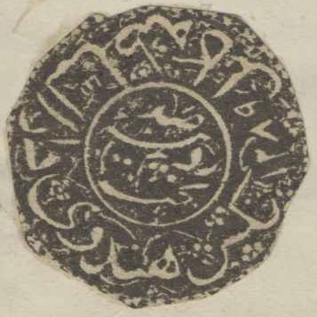
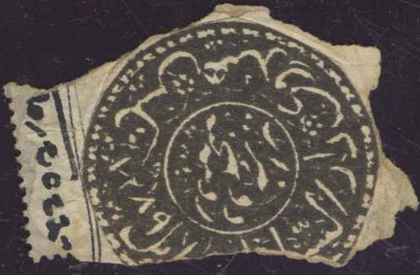
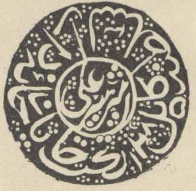
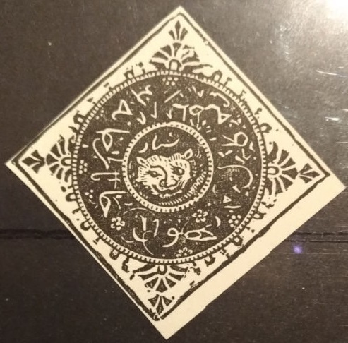
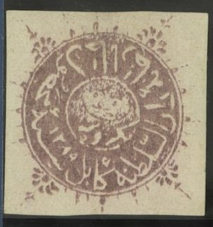
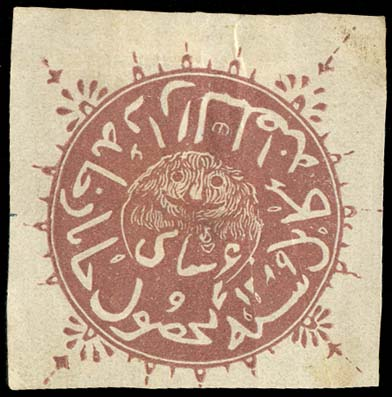
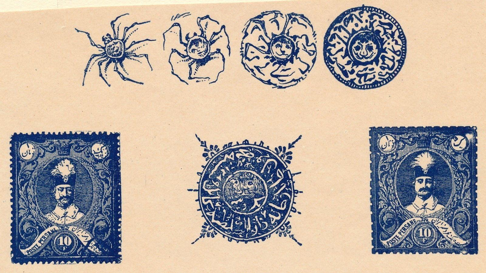
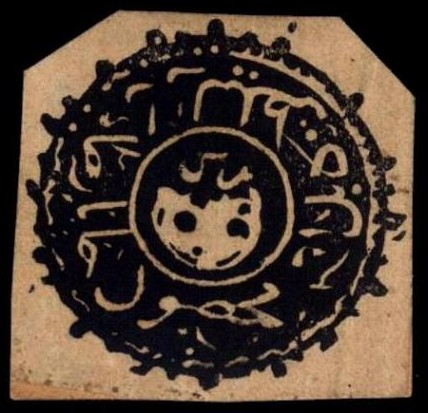

(Arabic numerals)
Return To Catalogue - Afghanistan 1874-1891 - Afghanistan 1892 onwards
Note: on my website many of the
pictures can not be seen! They are of course present in the
catalogue;
contact me if you want to purchase the catalogue.
(Arabic numerals)
The Kingdom of Kabul (Aghanistan) first issued stamps in 1870. Early designs featured a tiger's head, symbolizing the name of Amir Sher (tiger) Ali. From 1870 to 1892 the date of the Muslim year also appears. Afghan stamps of the period were issued without gum and imperforate. When used, they were mostly cancelled by cutting or tearing a piece from the stamp. Before 1928, when Afghanistan joined the Universal Postal Union, Afghan stamps were valid only for use within the country itself. Mail traveling to other countries needed the addition of Indian stamps.
  
Unlisted (bogus?) stamps with inscription '1289' in Arabic
letters (1868) in the side inscription.
From 1870 until 1892 several issues with resembling native script were issued in various colors, these stamps are hard to classify. A nice website on these stamps can be found at: http://www.afghanphilately.co.uk/index.html.
1 Shahi black 1 Senar black 1 Abasi black
Remark: the value '1' does not appear in the inscription on these stamps. The words 'Shahi', 'Senar' and 'Abasi' can be found in Arabic inscriptions just above the tiger's head. The year is indicated to the right of the tiger in the outer inscription. Specialists distinguish 4 plates of the 1 Shahi stamp and 3 plates of the other two values.
Value of the stamps |
|||
vc = very common c = common * = not so common ** = uncommon |
*** = very uncommon R = rare RR = very rare RRR = extremely rare |
||
| Value | Unused | Used | Remarks |
| 1 Shahi | RRR | RR | |
| 1 Senar | RR | RR | |
| 1 Abasi | RR | RR | |
Usually the stamps were cancelled by tearing off a piece, examples:


Cancel consisting of typical penstrokes and a piece torn off
Examples on letter:

Forgeries:

Forgeries

1871 issue; with arabic inscription '1289'; pair of 1 R lilac
stamps
6 Shahi stamps, reduced sizes
Last 3 pictures reproduced with permission from: http://www.sandafayre.com
6 Shahi brown 1 Rupee brown
Value of the stamps |
|||
vc = very common c = common * = not so common ** = uncommon |
*** = very uncommon R = rare RR = very rare RRR = extremely rare |
||
| Value | Unused | Used | Remarks |
| 6 Shahi | RRR | RRR | |
| 1 Rupee | RRR | RRR | |

Two forgeries, apparently made by the same forger (likely Senf).
I've seen the left forgery with the text 'Afghanistan 1871/72.
1/2 Rupie.' printed in blue at the bottom (the way it was printed
by Senf). In the above stamp, this text has been cut off.

This forgery was made by the forger Senf,
the word "FACSIMILE" is printed in very small letter at
the top of the stamp. Usually it is not cut to shape as in this
example. Often the word "FACSIMILE" has been
overwritten or cancelled (see next image).
Other bogus issue in brown color
Forgery with '1289' date in the wrong color black. Next to it the
same forgery(?) with cancel in the correct color.

Fournier forgeries as they can be found in the Fournier Album,
here printed together with some forgeries of Persia.


1 Shahi black
Value of the stamps |
|||
vc = very common c = common * = not so common ** = uncommon |
*** = very uncommon R = rare RR = very rare RRR = extremely rare |
||
| Value | Unused | Used | Remarks |
| 1 Shahi | RR | R | |
Printed in sheets of 15 stamps (5 rows of 3 stamps), each stamp is slightly different from the other.

Type 3 of the sheet

Part of a sheet of 15 stamps (5 rows of 3 stamps), here positions
4 to 10. Note the missing right hand top ornament in type 6. The
stamps were cancelled by a penstroke over the head of the lion
typical for the town of Tashkurgan.

Types 10 (arrow bottom left missing) and 13 (white eyes) from the
sheet (bottom left corner)

Type 11 from the sheet (upper left arrow smudged and black spot
on mouth of lion)

Type 15
1 Shahi black (with year '1290') 1 Shahi lilac (with year '1290', non-issued?) 1 Abasi black (with year '1291') 1/2 Rupee black (with year '1291') 1 Rupee black (with year '1291')
Value of the stamps |
|||
vc = very common c = common * = not so common ** = uncommon |
*** = very uncommon R = rare RR = very rare RRR = extremely rare |
||
| Value | Unused | Used | Remarks |
| 1 Shahi black | *** | *** | |
| 1 Shahi lilac | ? | ? | |
| 1 Abasi | RRR | RR | |
| 1/2 Rupee | RR | RR | |
| 1 Rupee | RR | RR | |


Not sure if these stamps are genuine
For Afghanistan, 1874 onwards, click here.


{kind=link}
{kind=link}
{kind=link}
{kind=link}
{kind=link}
{kind=link}
{kind=link}
{kind=link}
{kind=link}
{kind=link}